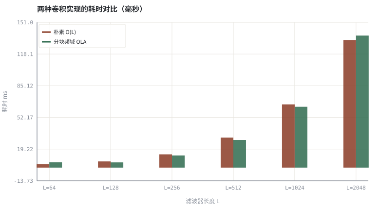
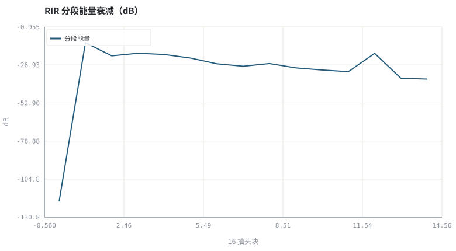

第 04 章线性系统、卷积与频域实现
AEC 的每一次「预测回声」，都是一次带长滤波器的实时卷积。
本章位置：第 03 章 · 怎么算「变好了」：客观指标、尺度与主观听测 约定指标，本章补上最基础的算子；第 05 章 · 自适应滤波：LMS、NLMS 与收敛 让这个滤波器的系数自己学出来，第 06 章 · 频域自适应滤波：FDAF、分块 MDF 与收敛 再把它搬进频域。
时域卷积是嵌套循环，频域卷积是「先变换到可逐点乘的域、再变换回来」——典型的换域加速。补零长度 N ≥ B+L−1 就是防止环形缓冲区回绕。
- 能写出 LTI 系统的卷积与频域等价形式。
- 能手算分块 overlap-add 频域卷积并验证数值一致。
- 能说明滤波器长度、算力与混响尾的关系。
- 能解释为什么频域实现是实时 AEC 的必然选择。
§知识点地图
每个知识点都配了 1～2 个扩展学习链接；本章完整资源清单见 扩展学习。
| # | 知识点 | 扩展学习 | 状态 |
|---|---|---|---|
| 1 | LTI 与冲激响应 | pyroomacoustics ↗ · SciPy signal ↗ | 正文已覆盖 |
| 2 | 线性卷积 | The Scientist and Engineer's Guide to DSP ↗ · SciPy signal ↗ | 正文已覆盖 |
| 3 | 循环卷积与补零 | The Scientist and Engineer's Guide to DSP ↗ · SciPy signal ↗ | 正文已覆盖 |
| 4 | overlap-add | The Scientist and Engineer's Guide to DSP ↗ · pyroomacoustics ↗ | 正文已覆盖 |
| 5 | FFT 卷积复杂度 | Cooley–Tukey FFT ↗ · Python 标准库文档 ↗ | 正文已覆盖 |
| 6 | 分块频域滤波 | Cooley–Tukey FFT ↗ · SciPy signal ↗ | 正文已覆盖 |
| 7 | 滤波器阶数 | The Scientist and Engineer's Guide to DSP ↗ · pyroomacoustics ↗ | 正文已覆盖 |
| 8 | 混响尾与尾长 | The Scientist and Engineer's Guide to DSP ↗ · pyroomacoustics ↗ | 正文已覆盖 |
§4.1同一个运算，两种复杂度
y[n] = Σ_{k=0}^{L−1} h[k]x[n−k] ⇔ Y[k] = H[k]·X[k]（补足零后）
| 实现 | 每输出样本代价 | L=512 时相对量级 | 适用 |
|---|---|---|---|
| 朴素时域卷积 | O(L) 乘加 | ~512 | 短滤波器、教学、离线核对 |
| 分块频域 OLA | O(log(L+B)) | ~10–20 | 实时 AEC、长混响尾 |
| 逐块 FDAF/MDF | O(log L) + 自适应更新 | 工业主流 | 第 06 章详述 |
16 kHz 下覆盖 128 ms 混响需要 L≈2048 抽头。时域逐样本做 2048 次乘加约32 M 次/秒，而分块频域把它压到几 M 次/秒——这不是优化技巧，是能不能实时跑的分界线。
§4.2分块 overlap-add 的正确性条件
- 每块长度 B，FFT 长度 N ≥ B + L − 1，否则循环卷积会绕回（时域混叠）。
H预先补零到 N 点并做一次 FFT，之后每块只做一次正/逆变换与逐点乘。- 相邻块的尾部重叠部分相加，不能覆盖。
- 本书
fft_convolve()就是这一算法的最小实现，与convolve()的差值应停在浮点误差量级。
§Python 实验
实验 4-1 · 朴素卷积 vs 分块频域卷积的数值与耗时
#!/usr/bin/env python3
# -*- coding: utf-8 -*-
"""在不同滤波器长度下比较两种实现的最大误差与耗时，并观察混响尾能量。
全部语音 / 噪声 / 房间冲激响应均为代码合成信号，仅用于教学演示机制与量级。
"""
from __future__ import annotations
import math
import pathlib
import random
import statistics
import sys
import time
_here = pathlib.Path(__file__).resolve()
for _p in _here.parents:
if (_p / "tools" / "dsp.py").exists():
sys.path.insert(0, str(_p / "tools"))
break
from dsp import (SAMPLE_RATE, fft, hann, stft, istft, magnitude_db, spectrum,
white_noise, tone, chirp, synthetic_speech, rir, convolve,
fft_convolve, delay, clip, normalize_peak, rms, rolling_rms,
smooth, db, energy_db, snr_db, erle_db, seg_snr_db,
scale_align, si_sdr_db, lufs_approx,
write_wav, read_wav, wav_info)
from chart import Chart, heatmap, BLUE, RED, GREEN, AMBER
FIG = _here.parents[1] / "fig"
AUDIO = _here.parents[1] / "audio"
FIG.mkdir(exist_ok=True)
AUDIO.mkdir(exist_ok=True)
random.seed(7)
# ---- 参数区 ----
N = 4000
LENS = (64, 128, 256, 512, 1024, 2048) # 扫描到 2048，加速比才明显
DECAY = 0.006
# ---- 计算与作图 ----
rng = random.Random(7)
x = white_noise(rng, N, 0.4)
errors, t_naive, t_fft = [], [], []
for L in LENS:
h = rir(rng, L, decay=DECAY, direct_delay=min(24, L // 4))
t0 = time.perf_counter()
a = convolve(x[:1200], h)
t1 = time.perf_counter()
b = fft_convolve(x[:1200], h)
t2 = time.perf_counter()
errors.append(max(abs(u - v) for u, v in zip(a, b)))
t_naive.append(t1 - t0)
t_fft.append(t2 - t1)
h = rir(rng, 256, decay=DECAY)
wet = fft_convolve(synthetic_speech(rng, N), h)[:N]
energy = [10 * math.log10(sum(v * v for v in h[i:i + 16]) / 16 + 1e-12)
for i in range(0, len(h) - 16, 16)]
c = Chart(FIG / "04-complexity.svg", "两种卷积实现的耗时对比（毫秒）",
xlabel="滤波器长度 L", ylabel="耗时 ms",
xticks=[(i, "L=%d" % L) for i, L in enumerate(LENS)])
c.bars(range(len(LENS)), [1000 * t for t in t_naive], RED, label="朴素 O(L)")
c.bars(range(len(LENS)), [1000 * t for t in t_fft], GREEN, label="分块频域 OLA")
print("复杂度图:", c.save())
e = Chart(FIG / "04-rir-energy.svg", "RIR 分段能量衰减（dB）", xlabel="16 抽头块", ylabel="dB")
e.line(range(len(energy)), energy, BLUE, label="分段能量")
print("能量图:", e.save())
write_wav(AUDIO / "04-dry.wav", normalize_peak(x))
write_wav(AUDIO / "04-wet.wav", normalize_peak(wet))
print("最大数值误差: " + " ".join("L=%d→%.1e" % (L, e) for L, e in zip(LENS, errors)))
print("L=%d 时 朴素=%.1fms 频域=%.1fms 加速=%.1f× | RIR能量衰减 %.1f dB" %
(LENS[-1], 1000 * t_naive[-1], 1000 * t_fft[-1], t_naive[-1] / max(t_fft[-1], 1e-9),
energy[0] - energy[-1]))操作：核对最大误差应停留在 1e-14 量级；观察 L 增大后两种实现的耗时差距拉开。 预期与判读：两种实现数值一致（浮点误差量级）；朴素卷积耗时随 L 线性增长，但手写 FFT 的常数开销很大，即使扫到 L=2048，本例频域实现也未必更快。算法复杂度优势不等于实测更快：实时 AEC 必须换工业级 FFT 库（见附录 A.6）。
改参数看趋势：把 DECAY 调到 0.02（长混响），湿信号尾音明显变长。 文件位置：part1/04-lti-convolution/code/04-convolution.py


04-dry.wav
干信号（白噪声探测）（16 kHz / 16-bit 单声道，代码合成信号，不是真实录音）
04-wet.wav
经过 RIR 卷积后的湿信号（16 kHz / 16-bit 单声道，代码合成信号，不是真实录音）
代码块右上角可一键复制；仓库里的 code/*.py 由 tools/extract_code.py 从这些代码块自动抽取。脚本只用标准库、固定 random.seed(7)，运行后写出 fig/*.svg 与 audio/*.wav；批量运行用 ./tools/run_python.sh。
§本章参考资料
按本章知识点挑选的精读资料；更多检索入口见 扩展学习。
§常见误区
- FFT 长度不足 B+L−1，循环卷积造成时域混叠。
- 忘记把相邻块的重叠尾相加，直接在块边界拼接。
- 用短滤波器覆盖长混响，还以为是自适应算法不收敛。
- 忽略浮点误差量级，把 1e-12 当成实现错误。
§习题与思考
- 推导 N ≥ B+L−1 的来源，并说明违反时会发生什么。
- 估算 48 kHz、256 ms 混响需要的抽头数与每秒乘加量。
- 把 fft_convolve 的块长 B 改成 64，观察耗时如何变化。
§扩展学习
继续检索
- Google Scholar：linear time invariant system convolution RIR ↗
- arXiv：linear time invariant system convolution RIR ↗
- GitHub：linear time invariant system convolution RIR ↗
全书链接总表见 FFmpeg Filters 文档 ↗ 与 附录 A.7；滤镜是否可用请以本机 ffmpeg -filters 为准。
§延伸阅读与内链
- 第 06 章 · 频域自适应滤波：FDAF、分块 MDF 与收敛 频域自适应滤波 FDAF/MDF；第 10 章 · 用 NLMS 实现一个可验证的 AEC NLMS 回声消除实现。